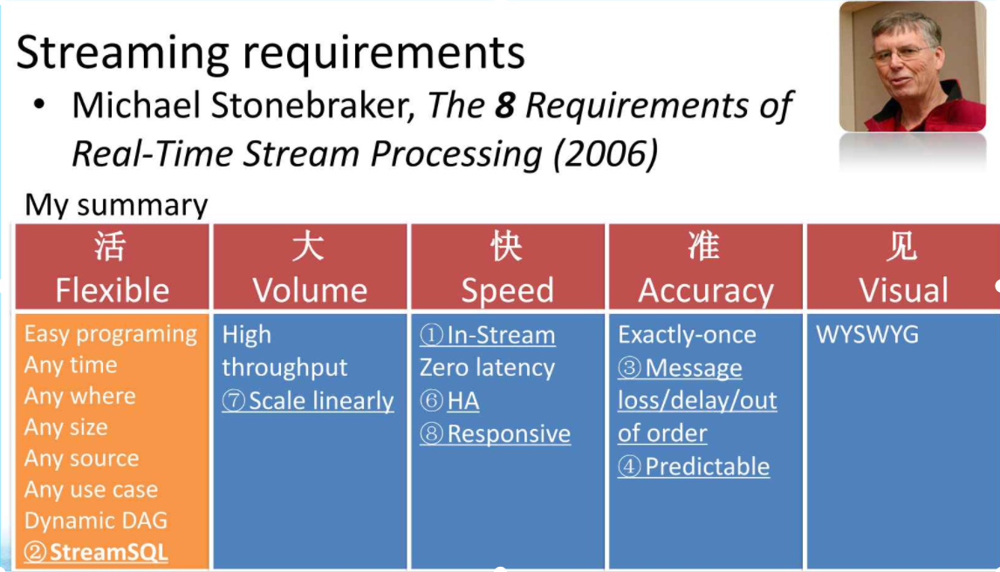
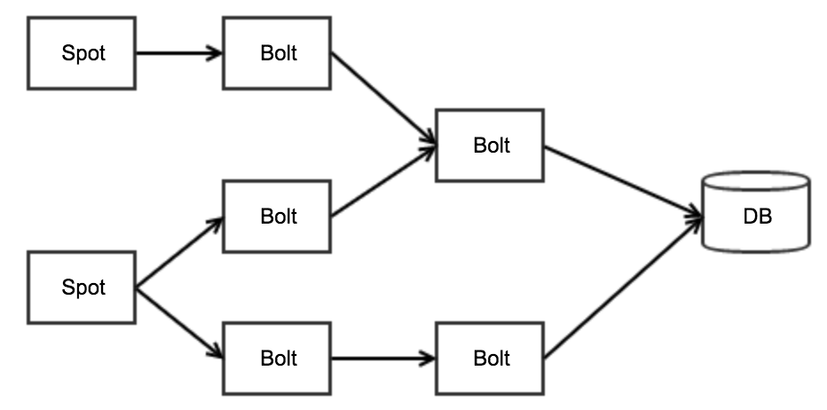
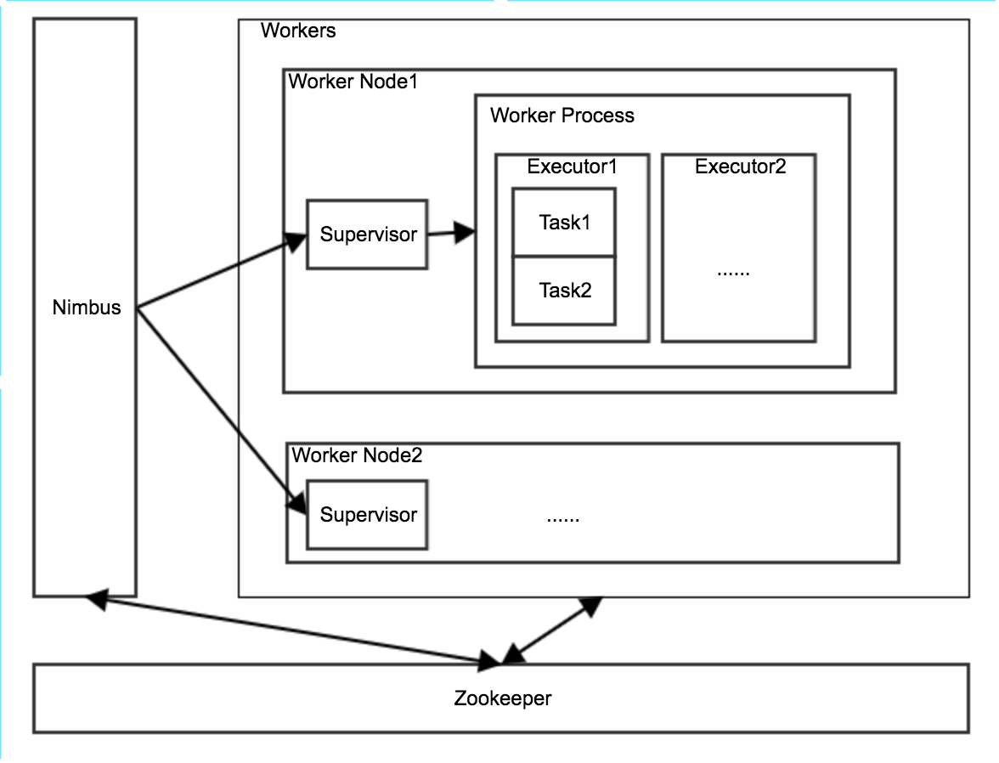
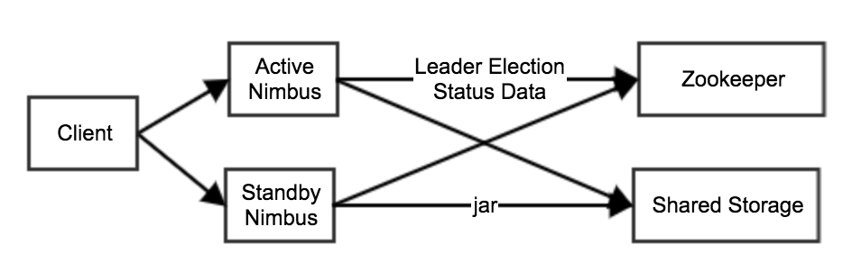
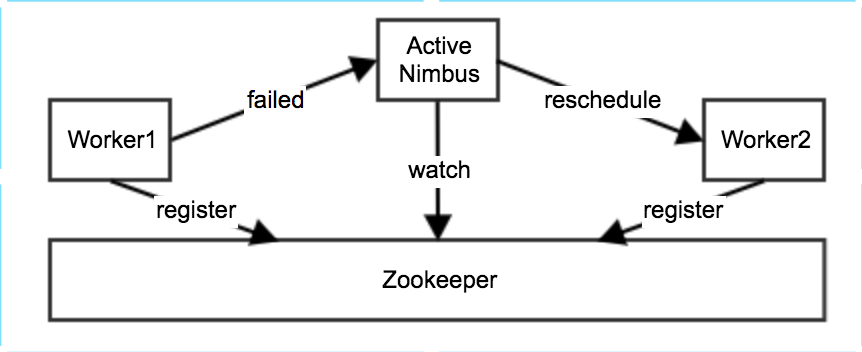

Storm架构
流式系统的特点
Michael Stonebraker在论文The 8 Requirements of Real-Time Stream Processing中提出了在设计流式系统时需要考虑的8个条件：
- Keep the Data Moving：低延迟
- Query using SQL on Streams：支持StreamSQL
- Handle Stream Imperfections (Delayed, Missing and Out-of-Order Data)：能处理延迟数据、丢失数据、乱序数据
- Generate Predictable Outcomes：结果可预测
- Integrate Stored and Streaming Data：能保存中间状态
- Guarantee Data Safety and Availability：高可用HA
- Partition and Scale Applications Automatically：可扩展
- Process and Respond Instantaneously：低延迟
钟翔在设计Gearpump时又将这8个条件浓缩为5个字：活大快准见。

我觉得比较重要的几点：
- 高可用
- 可扩展性
- 低延迟
- 方便存储中间状态
- Exactly once语义
- 支持升级
单机版Storm

分布式Storm
http://storm.apache.org/releases/current/Understanding-the-parallelism-of-a-Storm-topology.html

高可用
Nimbus高可用
http://storm.apache.org/releases/current/nimbus-ha-design.html

Worker高可用

Reliability
http://storm.apache.org/releases/current/Guaranteeing-message-processing.html
可扩展性
- Nimbus
- Zookeeper
- Worker：扩容worker数量
低延迟
来一条消息立即处理，延迟时间=数据处理步骤 * (数据处理时间 + 数据传递时间)
StreamSQL
http://storm.apache.org/releases/current/storm-sql.html
Exactly once语义：Trident
http://storm.apache.org/releases/current/Trident-tutorial.html
方便存储中间状态
支持升级
Reference